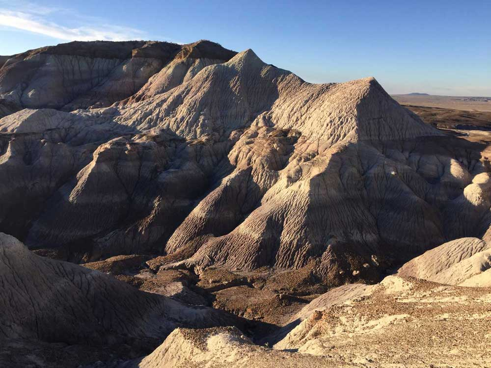
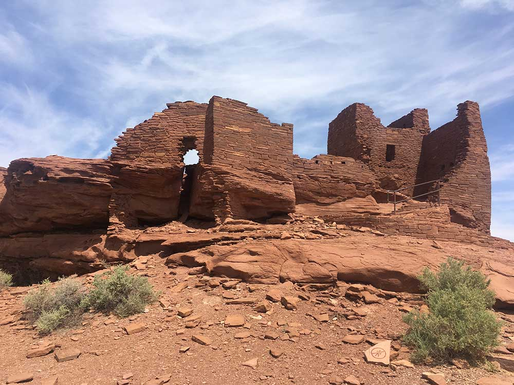
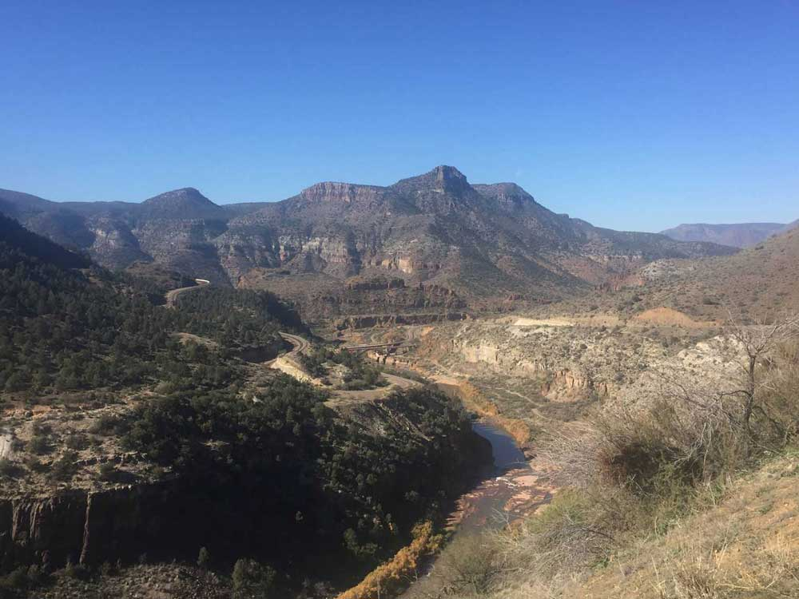

Arizona is well known for its desert Basin and Range region in the state's southern portions, which is rich in a landscape of xerophyte plants such as the cactus. Its climate has exceptionally hot summers and mild winters. The state is less well known for its pine-covered north-central portion of the high country of the Colorado Plateau.
Like other states of the Southwest United States, Arizona has an abundance of mountains and plateaus. Despite the state's aridity, 27% of Arizona is forest. The world's largest stand of ponderosa pine trees is in Arizona.
Southern Arizona is known for its desert climate, with very hot summers and mild winters. Northern Arizona features forests of pine, Douglas fir, and spruce trees; the Colorado Plateau; mountain ranges (such as the San Francisco Mountains); as well as large, deep canyons, with much more moderate summer temperatures and significant winter snowfalls. There are ski resorts in the areas of Flagstaff, Alpine, and Tucson. In addition to the internationally known Grand Canyon National Park, which is one of the world's seven natural wonders, there are several national forests, national parks, and national monuments. Arizona is also home to one of the most well-preserved meteorite impact sites in the world. Arizona is one of two U.S. states (Hawaii being the other) that do not observe Daylight Saving Time. (The large Navajo Nation in the state's northeastern region does.)
About one-quarter of the state is made up of Indian reservations that serve as the home of 27 federally recognized Native American tribes, including the Navajo Nation, the largest in the state and the United States, with more than 300,000 citizens.The Mogollon Rim, a 1,998-foot escarpment, cuts across the state's central section and marks the southwestern edge of the Colorado Plateau.
Located in northern Arizona, the Grand Canyon is a colorful, deep, steep-sided gorge, carved by the Colorado River. The canyon is one of the Seven Natural Wonders of the World and is largely contained in the Grand Canyon National Park—one of the first national parks in the United States. The canyon was created by the Colorado River cutting a channel over millions of years, and is about 277 miles long, ranges in width from 4 to 18 miles and attains a depth of more than 1 mile. Nearly two billion years of the Earth's history have been exposed as the Colorado River and its tributaries cut through layer after layer of sediment as the Colorado Plateau uplifted.
Southwest > Arizona
Map of Arizona
Interactive Arizona map, showing all parks, preserves, trails and other locations

Petrified Forest NP
National Parks
Glen Canyon NRA · Grand Canyon · Petrified Forest · Saguaro

Wupatki NM
National Monuments
Aqua Fria · Canyon De Chelly · Casa Grande · Chiricahau · Montezuma Castle and Well · Organ Pipe Cactus · Sunset Crater · Tonto · Vermillion Cliffs Coyote Buttes · Walnut Canyon · Wupatki

Salt River Canyon View Point